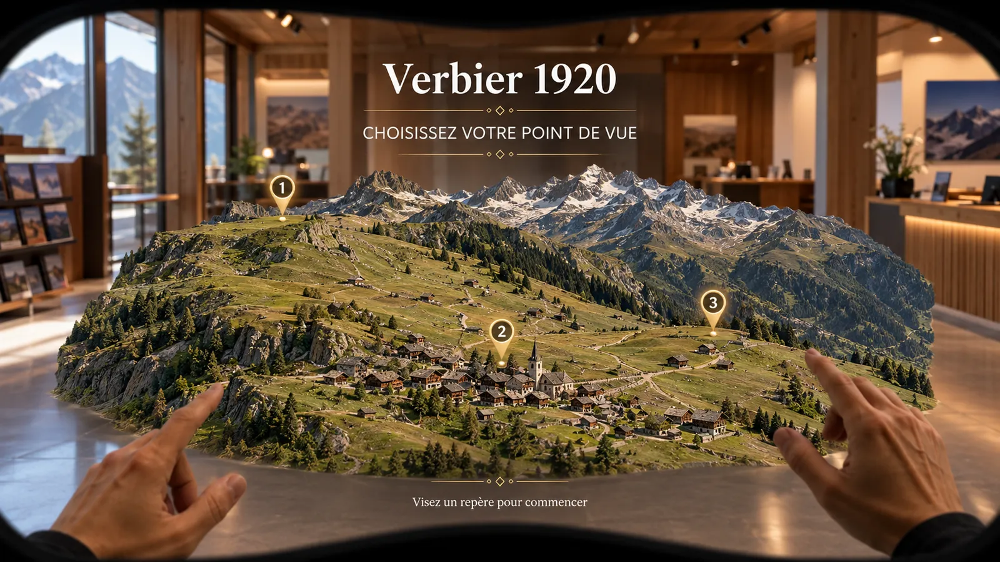
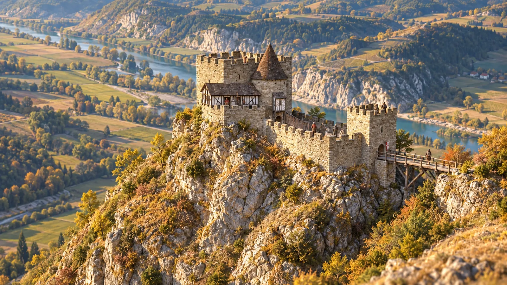
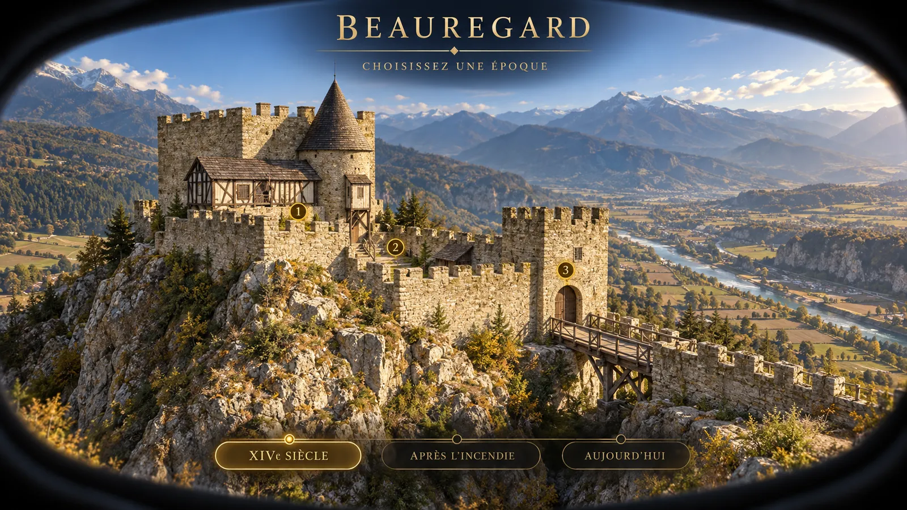
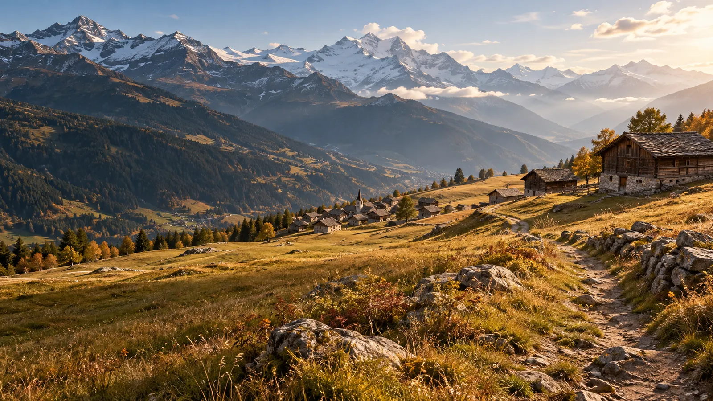
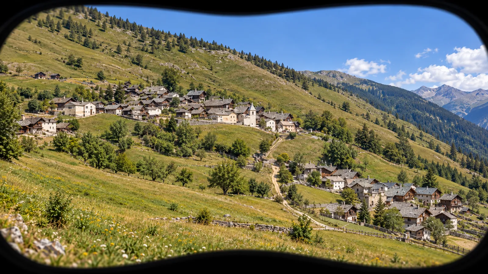
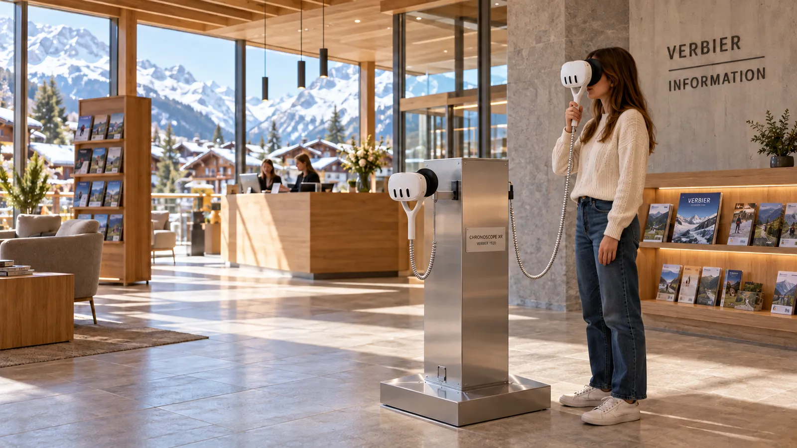
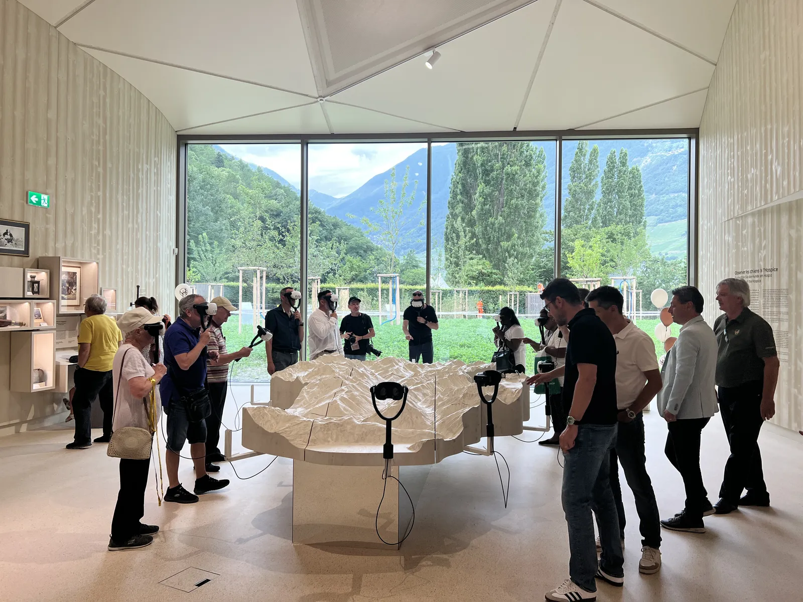

Génie Culturel · PropositionsProposals
CHRONOSCOPE
XR
Une carte. Un pin. Vous y êtes.A map. A pin. You’re there.
Choisir un pin, puis explorer le lieu à 360°, comme un Street View historique. Deux propositions pour deux territoires : un château à faire réapparaître, un paysage à retrouver.Pick a pin, then explore the place in 360°, like a historical Street View. Two proposals for two places: a castle to bring back, a landscape to rediscover.
Voir aussi Chronoscope XR dans le portfolioSee also Chronoscope XR in the portfolio

Proposition 1 · Château de Beauregard, SierreProposal 1 · Château de Beauregard, Sierre
Le château restitué à travers les siècles.The castle restored through the centuries.
Le workshop ARcheoGame du 15 octobre 2026 a révélé une piste claire : valoriser Beauregard par une expérience immersive. Une restitution immersive du château, complémentaire au sentier et à la visite des ruines.The ARcheoGame workshop of 15 October 2026 revealed a clear direction: showcasing Beauregard through an immersive experience. An immersive restoration of the castle, complementing the trail and the visit of the ruins.
Faire réapparaître le château et voyager entre ses époques.Bring the castle back and travel between its eras.
Proposition pour Sierre Tourisme et la Fondation du Château de BeauregardProposal for Sierre Tourisme and the Château de Beauregard Foundation

Le château des RarogneThe Rarogne castle
Retrouver le logis, les cours et l’accès fortifié avant les sièges. État de restitution à établir avec la Fondation.Rediscover the residence, courtyards and fortified access before the sieges. State of restoration to be established with the Foundation.
L’incendie et l’abandonFire and abandonment
Comprendre la fin du château lors des guerres de Rarogne et découvrir un état après l’incendie.Understand the castle’s end during the Rarogne wars and discover a state after the fire.
Le château redécouvertThe castle rediscovered
Mettre les vestiges en regard des fouilles et des consolidations pour comprendre ce qui subsiste.Compare the remains with the excavations and consolidation work to understand what survives.
Trame proposée : trois états historiques, trois points de vue par état. Restitutions à valider avec la Fondation.Proposed outline: three historical states, three viewpoints per state. Restorations to be validated with the Foundation.

Choisir une époque, explorer le châteauChoose an era, explore the castle
Le château reconstitué. Plusieurs époques. Des vues à choisir ensemble.The castle rebuilt. Several eras. Views to be chosen together.
Proposition 2 · Verbier 1920Proposal 2 · Verbier 1920
Le paysage avant la station.The landscape before the resort.

Le workshop du 24 septembre 2026 a fait ressortir une piste claire pour Verbier : une restitution intégrale du paysage en réalité virtuelle. Le circuit en réalité augmentée a été jugé moins adapté à la restitution du Verbier historique.The workshop of 24 September 2026 highlighted a clear direction for Verbier: a full restoration of the landscape in virtual reality. An augmented-reality trail was judged less suited to restoring historical Verbier.
Voir le plateau, les prés et le village avant la densification de la station.See the plateau, the meadows and the village before the resort grew dense.
Une proposition autonome, complémentaire aux parcours ARcheoGame.A stand-alone proposal, complementing the ARcheoGame trails.
Proposition pour Verbier Tourisme et la Commune de Val de BagnesProposal for Verbier Tourisme and the Municipality of Val de Bagnes

Un voyage dans le temps, en lieu d’accueilA journey through time, at a visitor venue
2 casques · 1 installation2 headsets · 1 installation
Une borne compacte. Deux casques à poignée. Une visite autonome. À l’office de tourisme, au centre culturel ou dans un lieu partenaire, à définir ensemble.A compact station. Two handheld headsets. A self-guided visit. At the tourist office, the cultural centre or a partner venue, to be defined together.
- 01Saisir le casquePick up the headset
Le visiteur porte le casque à ses yeux, en le tenant par la poignée.Visitors raise the headset to their eyes, holding it by the handle. - 02Choisir époque et point de vueChoose an era and a viewpoint
Il choisit une époque, puis sa position d’observation.They choose an era, then their observation point. - 03Regarder autour de soiLook around
Il découvre le lieu à 360°, avec une ambiance sonore propre à la vue.They discover the place in 360°, with a soundscape specific to each view. - 04Changer d’époque ou de vueChange era or view
Il découvre un autre état du lieu ou un autre point de vue.They discover another state of the place or another viewpoint. - 05Terminer la visiteEnd the visit
Il repose le casque sur son support pour le visiteur suivant.They put the headset back on its stand for the next visitor.

Personnalisez votre ChronoscopeCustomise your Chronoscope
La configuration de base (1 époque, 3 points de vue, 2 casques) peut évoluer selon vos envies :The base configuration (1 era, 3 viewpoints, 2 headsets) can grow as you wish:
- Un point de vue supplémentaire dans une époque déjà crééeAn extra viewpoint in an existing era
- Une nouvelle époque avec trois points de vueA new era with three viewpoints
- Un avatar narrateur trilingue : personnage 3D animé, voix FR/DE/EN, une introduction par point de vueA trilingual narrator avatar: an animated 3D character, FR/DE/EN voices, one introduction per viewpoint
- Une deuxième borne : mêmes contenus, quatre casques au totalA second station: same content, four headsets in total
- Une maquette physique en option : le relief se voit, le passé se révèleAn optional physical model: the relief is visible, the past is revealed

Un déploiement en quatre étapesDeployment in four steps
CadrerScope
Archives, date cible, points de vue et implantation.Archives, target date, viewpoints and layout.
ReconstituerRebuild
Terrain, bâti ancien et validations historiques.Terrain, historic buildings and historical validation.
TesterTest
Interface, confort d’usage et session pilote.Interface, ease of use and a pilot session.
InstallerInstall
Configuration, formation et mise en service.Configuration, training and commissioning.
Planning cible : 8 à 10 semaines après réception des sources.Target schedule: 8 to 10 weeks after the sources are received.
Propositions de travail : époques, vues et restitutions à valider avec les détenteurs des sources.Working proposals: eras, views and restorations to be validated with the holders of the sources.
Imaginons votre
Chronoscope XR.Let’s imagine your
Chronoscope XR.
← Retour au portfolio← Back to the portfolio · Chronoscope XR dans le portfolioChronoscope XR in the portfolio · genieculturel.ch